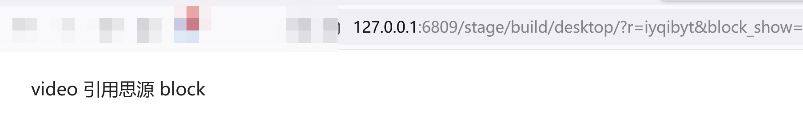
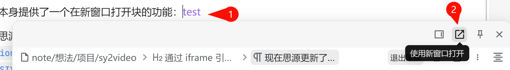

首页
通过 iframe 引用思源的 block
现在思源更新了发布模式，通过发布模式访问思源内容可以设置不用鉴权。
但直接嵌入 ip:6806 是一个完整的编辑页面，现在我只需要引用他的一个 block 该如何做呢？
注意到思源的弹出块面板代码在这里：
window.siyuan.blockPanels.push(new BlockPanel(
插件可以直接调用，所以我决定使用插件实现接受 url 参数 blockId 然后弹出一个块面板，并且让窗口只显示此块面板,实现代码位于：
this.addFloatLayer({
安装
2234839/sy2video-plugin-siyuan
插件后开启发布模式就可以通过 url 参数来让页面只显示指定的块
需要配置url参数： block_show (有此参数则功能生效) block_id 例如：http://127.0.0.1:6806/stage/build/desktop/?block_show=1&block_id=20240621163257-fp4jwg8
效果：

失败的尝试
注意到思源本身提供了一个在新窗口打开块的功能：
test

这个打开的效果已经很接近了，那么如何通过iframe 引用这个页面呢
首先在思源源码找到该页面的url规范
url:
${window.location.protocol}//${window.location.host}/stage/build/app/window.html?v=${Constants.SIYUAN_VERSION}&json=${encodeURIComponent(JSON.stringify(json))}
使用
这里的代码
来生成对应链接不可行， windows.html 里面的代码依赖了 electron 环境